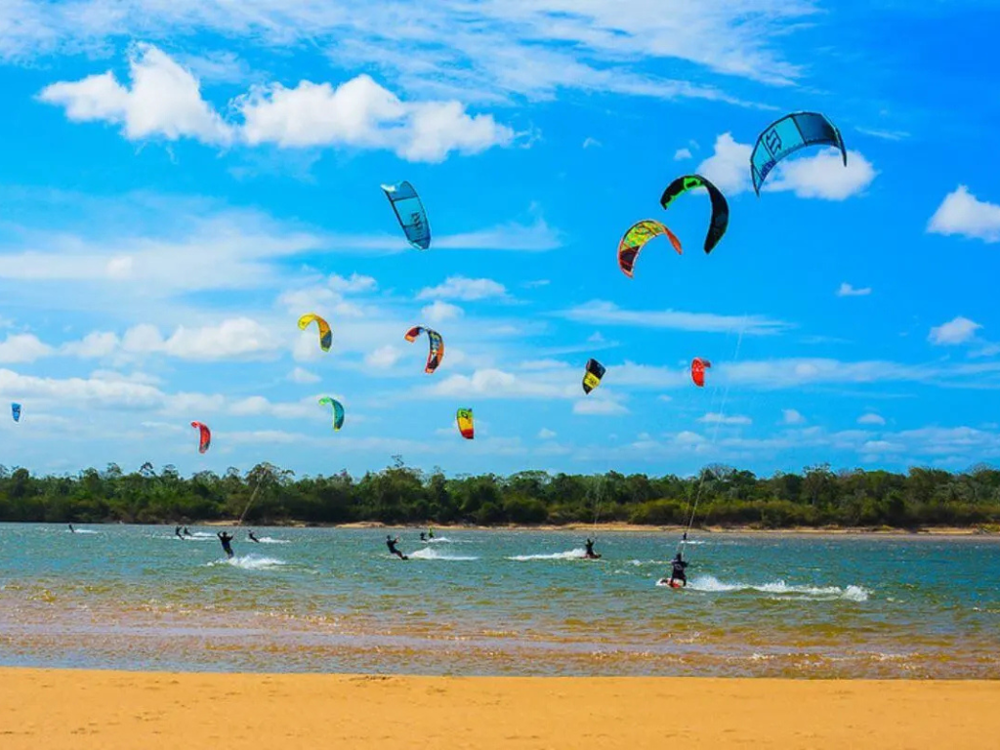

O Roraima é o estado mais ao norte do Brasil e faz fronteira com a Venezuela e a Guiana. Sua capital é Boa Vista, a única capital brasileira totalmente localizada no hemisfério Norte. O estado possui belas paisagens naturais, com destaque para o Monte Roraima, famoso por suas formações rochosas e pela grande biodiversidade. A economia de Roraima baseia-se na agropecuária, no comércio e no extrativismo. A cultura local apresenta forte influência indígena, já que o estado possui diversas comunidades tradicionais e grande riqueza cultural amazônica.

Voltar